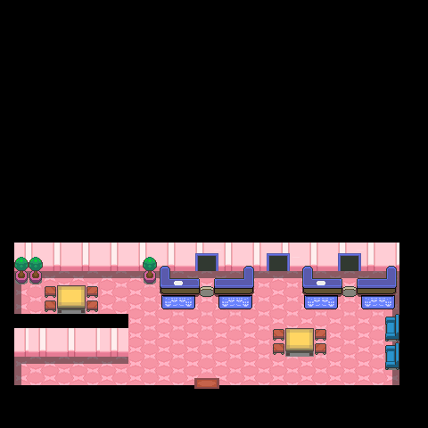

059 五彩斑斓的头巾
一句话目标：帮华丽大赛会场的嘉宾梅丽莎集齐红、蓝、粉、绿、黄五种颜色的头巾。
接取地点
- 华丽大赛会场（目录关联 地图 35:4；该地图页标题仅作“满金市”），NPC 梅丽莎（来自神奥家缘市的嘉宾）。入口坐标未定位。
准备条件
操作步骤
- 在华丽大赛会场与梅丽莎对话。她说：“我是梅丽莎，来自神奥的家缘市……一直在寻找最顶尖的华丽演出！”并提出想看“五种属性头巾”。
- 答应后出现「接受任务:<五彩斑斓的头巾>」（旗标 2962）。她把五色说成“帅气的红色、美丽的蓝色、可爱的粉色、聪明的绿色，还有强壮的黄色”。
- 按她对白里的线索收集五种头巾： - 红色与黄色：「听说在这座会场里就能寻得线索。」 - 蓝色与粉色：「海风吹拂的湛蓝市和浅葱市，似乎有人拥有蓝色与粉色呢。」 - 绿色：「34号道路往下冲浪，会找到一片森林，那里或许会有答案。」 （以上均为对白提示，未在脚本内验证。）
- 集齐后再找梅丽莎，她会问“你已经把那五种头巾都带来了吗？”，并用 checkitem 逐个核验红/蓝/粉/绿/黄(254-258)。
- 五色齐全时她送出谢礼并宣布「完成任务:<五彩斑斓的头巾>」（旗标 2963）。
交付检查
把五种头巾（254-258）交给梅丽莎核验，五色齐全并听完赠礼对白即完成（旗标 2963）。缺任意一种会走“还差一些”的分支。
奖励
- 丑丑鱼 0328 Lv20 ×1（直接赠送 givepokemon），附对白“获得了丑丑鱼！”
- 10000$、10 点 BracerPoints
容易卡住的位置
- 交付只用 checkitem 核验、并不 removeitem，故五种头巾交付后保留，不必担心被扣。
- 旗标 4246 未置位时，她只会以“这样呀？那就等你准备好后，再来回应我的审美吧！”收场。
- 对白给的收集地点只是线索（会场内/湛蓝市与浅葱市/34号道路冲浪后的森林），脚本未验证，勿当已确认坐标。
- 本任务脚本 kind 为 supplemental_branch_candidate、event_roots 为空：仅证明分支正文，不能证明地图入口，故不提供 NPC 坐标。
- 缺少头巾时的提示语与赠礼开场语两段对白（0x09D9C470、0x09D9C5D2）未在已导出文本中解码。
来源与待补字段
- 来源包：data/quest_packets_expanded/059.json（补充分支）。
- 待补：梅丽莎的入口/坐标未定位；旗标 4246 来源未定位；五种头巾各自的获取脚本不在本包，仅凭对白线索。
技术证据
- accept_flag=2962、complete_flag=2963；catalog_map=35:4。
- 主线脚本：0x09CD3121（intro→offer）、0x09CD315F（说明五色并询问）、0x09CD319B（接受，setflag 2962）、0x09CD31DB（checkitem 254-258 核验）、0x09CD3250（缺少时）、0x09CD3267（赠礼完成：givepokemon 328,20 / setflag 2904,2323 / addvar 20789+10 / addmoney 10000 / setflag 2963）。
- direct_flag_scripts：0x09CD3121、0x09CD312C、0x09CD319B、0x09CD3267。
- 依赖旗标：4246（0x09CD314F 检查）。
- 未解码对白地址：0x09D9C470（0x09CD3255 引用）、0x09D9C5D2（0x09CD326C 引用）。
地点地图
共享RGB底图；点击可缩放定位。数字对应本页相关地点，不代表地图上全部事件。
满金市

地图范围记录：当前资料没有精确人物／遭遇坐标。